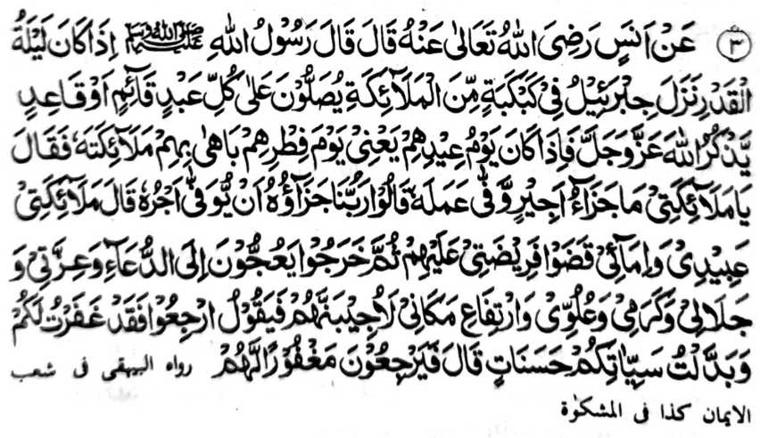

Hadith 3

Miyakathitayan ko Anas (Radhiallaho Anho) a pitharo iyan a pitharo o Rasulollah (Sallallaho Alaihi Wasallam), “Igira miyatalingoma so Lailatul Qadr na tomoron so Jibra’il (Alaihis Salaam) a ped ko sagorompong o manga Mala-ikat na pezalawatan niran so omani oripen a khititindeg o di na khi-ootod a gi-i ran thaden-tademan so Allah (Subhaanaho Wa Ta'ala) a Mabager ago Maporo. Anda den-i katalingoma o gawi-i a "Eid ma-ana so gawi-i a kamboka iran na ipangandag siran o Allah (Subhaanaho Wa Ta'ala) ko manga Mala-ikat sa tharo-on Niyan: 'Hay manga Mala-ikat Aken! Antona-ai balas o gomagalebek amay ka mitoman niyan so galebek iyan?' Tharo-on niran [a manga Mala-ikat], 'Kadenan Nami! Aya balas iyan na so kibegan non ko tarotop a sokay niyan.’ Tharo-on Niyan. 'Hay manga Mala-ikat Aken! Imanto na so manga oripen Aken a manga dato ago manga ba-i na minitoman niran so paliyogat Aken kiran na oriyan niyan na pheliliyo siran na iphoro iran raken so manga pangeni ran, na ibet ko Menang Aken, go so Kaporo Aken, go so Kasesela-a Raken. go so Kala Aken-i Daradat, go so Kaporo Aken-i Darepa, ka tharima-an Aken den so pangeni ran'. Na tharo-on Niyan [ko oriyan o kapakapasad Zambayang sa 'Eid], 'Mbabaling kano den ka sabenar a rinila-an Aken sekano go siyambi-an Aken so manga 'Amaal iyo a manga rarata sa manga pipiya.’” Miyatharo iyan, "Na mbabaling siran sa langon siran kiyarila-an."
OSAYAN
Si-i sangka-iya Hadith, na inaloy ron sa tanto a marayag a so Jibra’il (‘Alaihis Salaam) na pethoron a ped o manga Mala-ikat. Si-i ko isa a Hadith a miyakathitayan ko Ibne Abbas (Radhiallaho ‘Anho) a inaloy o Abdul Qaadir Jilanie (Rahmatullahi ‘Alaihi) ko kitab iyan a ‘Ghunya’ na inosay niyan pen so madadalem sangka-iya Hadith. Miyapanothol a so Jibra'il ('Alaihis Salaam), na si-i ko oriyan o kapakatoron niyan, na isogo iyan ko manga Mala-ikat a phora-porak siran ko manga walay o omani tao a ititindeg iyan so Sambayang, go pezalamen niran a mokit ko ka-amonga iran ko manga lima niyan. Oriyan noto na phora-porak so manga Mala-ikat, na mamanong siran ko omani walay, melagid o maito antawa-a mala a walay, melagid o matatago ko ipangalasan o di na zisi-i ko kapal, a babalingan o miyaratiyaya ka pagamongen niran. Aden baden a manga walay a di siran non zoled; giyoto so walay a aden a aso o di na baboy a matatago-on, o di na so walay a sosiyo misabap sa gi-i ron kanggola-olaa ko kazina, go so manga walay a aden a manga barahala a ropa manosiya ago pangangayamen a matatago-on. Tanto a kada a ontong a so manga walay o Muslim na miyapapas kiran angka-iya a mapiya a kazoledon o manga Mala-ikat sa aya bo a kiyasabapan non na aden a matatago-on a manga radawan a miyaniyaropa sa manga manosiya ago manga pangangayamen, a tatago-on non pantag sa lemba. Khapakay a satiman a toladan a binitin non o isa ko manga ta-alok ko tao na kiyapapasan so walay ran sa mapiya.